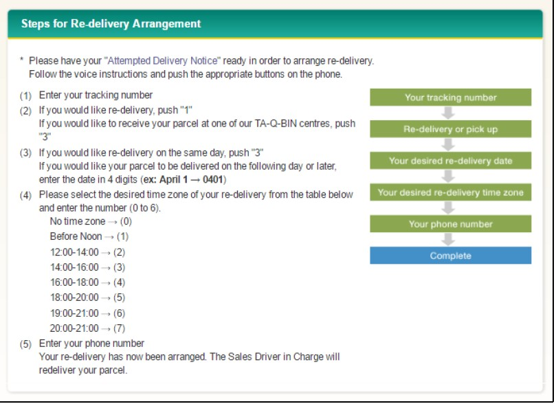
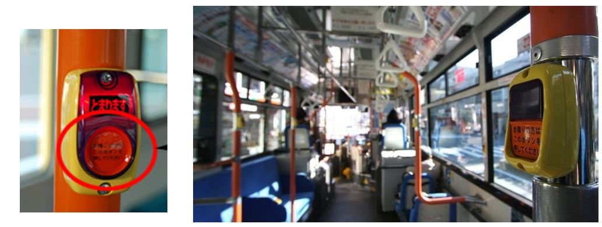

Dormitories
Aikawa Dormitory Information
| Name | Aikawa Dormitory |
|---|---|
| Address |
3302-3 Nakatsu, Aikawa-machi, Aiko-gun, Kanagawa Prefecture, Japan, 243-0303 |
| Tel No. of Resident Assistant | Tel:046-286-3350 / Mobile (Mr. and Mrs. Ogawa): 080-3703-3184 |
| Contact | Atsugi General Affairs Department |
| Facilities |
1st floor: a canteen, a bathtub, a sauna, recreation rooms, a training room, a smoking area, vending machines, parking area Each floor: laundry rooms, washrooms, shower rooms 3rd floor: balcony |
| Moving in/out of the dormitory |
●Period An employee can reside in the dormitory until his/her next payroll day(15th) on/after 26th birthday. (e.g.1) If the employee’s 26th birthday is coming within 2 years after moving in, the employee can reside in the dormitory for 2 years from the day of employment. (e.g.2) (e.g.1) If the birthday is 10th Mar, residing period is until 15th Mar. If the birthday is 20th Mar, residing period is until 15th Apr. (e.g.2) If the employee moved into the dormitory in 2018 at the age of 25, residing period is until 31st Mar in 2020. ●Procedures of moving into the dormitory 1) When arriving at the dormitory, receive the documents (written promise, receipt of room key and check sheet of room equipment) from the resident assistant. 2) Check the room equipment with the resident assistant. Submit the check sheet to the resident assistant after filling in the form. ●Procedures of moving out of the dormitory 1) Inform the resident assistant the day you leave the dormitory and receive the documents (application of moving out, check sheet of room equipment). 2) On the day of leaving, check the room with the resident assistant and submit the check sheet. 3) Return the room key to the resident assistant. *If you move to another residence, you must proceed for the designated formalities. |
| Payment of Rent | JPY20,000 is deducted from monthly salary, calculated in the same way as the payroll system. |
| Other Expenses |
Meal expense and Electricity expense: calculated from the start to the end of the month and deducted from next month salary (electricity: basic charge JPY780 + cost according to the amount of use) Internet (NTT Hikari): for only those applied individually (ask the dormitory manager to apply) NHK reception fee: paid from pooled dormitory membership fee |
| Meals |
●Time Weekdays: 6:30~7:30 (breakfast), 18:00~20:45 (dinner) Saturdays: 6:30~7:30 (breakfast), 18:00~19:30 (dinner) Sundays and Holidays: 9:00~10:00 (breakfast), 18:00~19:30 (dinner) ●Meal expense Breakfast: JPY220 Dinner: JPY380 Meal expenses is deducted from monthly salary. ●How to make an order ・Please fill in the application form at the canteen 7 business days in advance if you take breakfast or dinner. ・If you will cancel your breakfast or dinner after you fill in the application form, please revise the application form by 2 business days in advance. ・If you do not have breakfast or dinner without any cancellation, you are required to pay the cost of meals. |
| Common Bath |
●Time Bath: 18：00~23：00 (except for night shift workers) Bath is unavailable on Wednesday a.m. for cleanup. *Shower rooms are always available. ●Notes ・Please keep the dressing room and the bathroom clean. ・Please take care of your belongings. ・Please do not enter to the bathroom if you are drunk. |
| Monthly Meeting |
Monthly meeting by the residents is held by lead of the dormitory leader. The dormitory leader and General Affairs Department will hold monthly meeting. NHK reception fee is collected and managed by dormitory residents. |
| Laundry Room |
●Time 7：00～23：00 ●Notes ・Please bring your own basket with your name and room number written on. Personal basket needs to be prepared individually. ・Please put your basket right below the washing and drying machine which you use. ・Please remove laundries of the former user from the washing and drying machine to the former user’s basket, in case these are left in the machine. |
| Balcony |
・Please use the balcony of 3rd floor on building B. ・Please mind about the weather by yourself when you hang out to dry your laundry. ・Please clear up your laundry the balcony during the day time. ・Please do not use the balcony for any other purposes but to dry your laundry. |
| Common Rental Items | Iron, futon (bedding) dryer, and vacuum cleaner are available at the resident assistant’s room. To borrow, ask the resident assistant and fill in the record book. |
| Garbage |
・Please divide the garbage according to the indication put on the garbage station in the dormitory by 8:00 a.m. as follows. 1)Burnable (dirty paper, plastic bags of snacks, leftover food etc.) 2)Recyclable A (metal, glass, used paper, glass bottle, used juice carton, plastic tray, dry-cell battery etc.) 3)Recyclable B (can, plastic bottle, used clothes etc.) 4)Recyclable C (plastic tray, packages and plastic products with “プラ” marks. Plastic trash with no “プラ”marks or dirty trash should be put into the Burnable box.) 5)If you want to dump home electronics or large trash (at least one side is over 50cm), please talk to the resident assistant.: |
| Car, Motorcycle, Bicycle |
・Having a private car and commuting by motorcycle is prohibited. (a resident who has a private car must leave the dormitory immediately) ・To park one’s bicycle or motorcycle in the dormitory area, submit the application sheet to the resident assistant and put the designated sticker on it. |
| Post box |
・Key number of your post box is written near the inter phone in your room. (Please do not remove it.) ・If you forget your key number, please contact the resident assistant. |
| Delivery Service Receiving |
・The resident assistant will inform the arrival of a package by writing the consignee’s name on the notice board. If you find your name, ask the resident assistant to receive the package. ・As the resident assistant does not keep refrigerated package, please use delivery time specification service to receive the package by yourself. |
| Delivery Service for Payment on Arrival | ・If you entrust the resident assistant with the cost in advance, the resident assistant will receive the package with payment on arrival instead. Otherwise, the package will not be accepted. |
| Room key | ・The dormitory entrance key and private room key are common. Please make sure to lock your room when you go out. |
| Presence/Absence | ・To confirm your presence/absence at an emergency, please turn over the plate to red side in front of the entrance when you go out of the dormitory. Please turn over the plate to white side when you go back to the dormitory. |
| Cleaning |
・Residents must clean up the air conditioner in the room twice a year on general cleaning (noticed by a poster). To clean up, absorb dust from the filter with a vacuum cleaner or wash the filter and dry well. ・Residents of building B, who use room bathtub, must clean up the overflow at least once a week. |
| Smoking |
・Please do not smoke anywhere but the smoking area under the instruction of the fire station. ・Heat-not-burn tobacco (iQOS, glo, Ploom Tech, etc.) and electronic cigarette (including vaping) are treated in the same way as a cigarette. |
| Recreation Room |
●Time Weekdays : 17：00～22：00 Weekends : 9：00～22：00 ●Notes ・Please do not eat or drink in the recreation room. ・Please make sure to power down the equipment after you use. ・Please wear sneakers for safety when you use a running machine. ・Please concern not to bother other people when you use an audio equipment. |
| Training Room |
・The training room is available as the place for communication. ・The person in charge of the group using the training room needs to get permission from the resident assistant. ・When the residents use the kitchenette, be careful with fire. ・After using the training room, please clean up the room and do not leave any trash. ・The person in charge of the user’s needs to inform the resident assistant when they finishes the use. |
| Notes |
Please note that you are not allowed to do things as follows according to the regulation of the dormitory: ・Do not let non-residents enter the dormitory with no contact in advance. ・Do not put your belongings on the common area (corridors and stairs etc). ・Do not change equipment in your room and in the dormitory. ・Do not cook except in a designated area. ・Do not disturb neighbors (with noises or parking on the road etc). ・Do not own any pets. |
| Damage compensation | If you damage any equipment in the dormitory, you will bear all the cost for repairing. |

Katsuyama Dormitory Information
| Name | Yoshida Dormitory of Makino Milling Machine Co., Ltd. |
|---|---|
| Address |
2-19-9, Shin Nishihara, Fuji Yoshida-shi, Yamanashi 403-0017 |
| Phone number | Tel：0555-22-9650 |
| Caretaker’s name | Mr. Toshiyuki Miyazawa, Mrs. Michiko Miyazawa |
| Facility |
1st Floor Building Common Bathroom (Building A), Laundry Room (Building A & C) Each Floor Toilets & Lavatories (Building A & C) 2nd Floor Canteen Others Fitness Room, Parking Area (Car & Bicycle) |
| Department in charge | Katsuyama General Affairs Section. Tel:0555-20-3600 |
| Rent | 6,000 yen per month: Deducted from salary |
| Other Expenses |
Electricity: Deducted from salary Meal Fees: Deducted from salary TV charge (NHK): Please pay 1,000 yen to the dormitory manager every month Telephone (Only who would like to use): Automatically deducted from personal bank account |
| Check-Out |
-Please announce the date of check-out to the dormitory manager and Katsuyama General Affairs. A notification letter must be submitted to Katsuyama General Affairs. -General Affairs will take care of moving in case you check-out for intercompany transfer. |
| Meal |
●Time Breakfast Weekdays 6:30a.m.-7:30a.m. Saturdays 6:30a.m.-7:30a.m. Sundays 9:00a.m.-10:00a.m. Dinner Weekdays 6:00p.m.-8:45p.m. Saturdays 6:00p.m.-7:00p.m. Sundays 6:00p.m.-7:00p.m. ●Cost Breakfast：220 yen Dinner：380 yen (Meal fees are tallied up in the end of a month and deducted from salary of the following month) ●Application and Cancel -Please fill in the application form in the canteen by writing a circle ”○” by noon to order meals. -Please correct the application form or contact the dormitory（Extension: 7048）by noon when you wish to cancel in advance. -If you forget the cancellation, you must pay the meal fee by yourself as cancellation charge. |
| Electricity | Basic Rate 1,300 yen + Usage x 20 yen per 1kwh |
| Gas |
Usage x 58 yen per 1 Cubic Meter (Both usage is tallied up for the period from the beginning to the end of a month and deducted from salary in the following month) |
| Cleaning Service | Please take your laundry to the designated place on the 1st floor. The cleaning fees are deducted from salary. |
| Bathroom |
A bathroom is equipped in each room. ●Bath time Common Shower Room on 1st floor of Building C: Anytime Common Bathroom on 1st floor of Building A: 5:00p.m.-11：00p.m. (Except for whom working the night shift) |
| Bicycles, MotorvBikes |
-Please submit a notification letter of commuting method and an application for parking permission in the plant to Katsuyama General Affairs to claim commuting expenses and get permission for parking in the company’s property. -Please park vehicles in the designated area by following the instruction of the dormitory manager. |
| Laundry Room | Please use the washing machine equipped in each room. |
| Garbage |
-Combustibles, Nun-Combustibles, Cans & Bottles: Please sort by the type of waste and leave in the designated spot next to the gate. Collection schedule is shown on the bulletin board. -Electrical & Bulky Garbage: Please follow the instruction on the bulletin board. |
| Key |
- The key can be used for both (un)locking the inner door of the entrance and the room. - Make sure to lock the room when you go out. |
| Notification of Existence |
Please turn the plate when you are in/ out of the dormitory. (Turn over to red to show you are out and to white to show you are in) |
| Prohibited Matters |
-No one but your family members can enter the dormitory without permission of the dormitory manager. -Do not leave personal stuffs in public spaces in the dormitory. -Do not redecorate facilities in the dormitory. -Do not cook in the places except for a designated space. -Do not cause any trouble with other residents or neighbors. -Do not take pets in the dormitory. -Do not take other prohibited actions stipulated in the regulation. |
How to use a Washing Machine
Quick run-down
This will vary a lot between different brands and styles of machines, but here’s the rundown for how to use a washing machine like this:
1) Press 入 to turn on the washing machine.
2) Press 水量 to scroll through different water volume amounts to select the appropriate one.
3) Press コース to scroll through different courses to select the appropriate one.
4) Put the appropriate amount of detergent in the washing machine receptacle.
5) Close the lid.
6) Press スタート.

| Japanese Kanji | Japanese Kana | Romaji | English |
| 電源 | でんげん | Dengen | Power |
| 入 | いり | Iri | On |
| 切 | きり/きる | Kiri・Kiru | Off |
| お任せ | おまかせ | Omakase | Automatic |
| すすぎ１回 | すすぎいっかい | Susugi Ikkai | One rinse cycle |
| 香りしっかり | かおりしっかり | Kaori shikkari | Fragrance Saver |
| お急ぎ | おいそぎ | Oisogi | Speed Wash |
| つけおき | つけおき | Tsukeoki | Soak |
| 毛布 | もうふ | Moufu | Blanket |
| 槽カビ予防 | うけかびよぼう | Ukekabiyobou | Washing basin mold prevention |
| 槽洗浄 | うけせんじょう | Ukesenjyou | Washing basin cleaning |
| 送風乾燥 | そうふうかんそう | soufuukansou | Drying |
| 3時間 | さんじかん | sanjikan | Three hours |
| 時間後 | じかんご | jikango | …hours later |
| 予約 | よやく | yoyaku | Timer |
| 残り（約）分 | のこり（やく）ぶん | nokori (yaku) bun | Time remaining (approx.) min. |
| 洗い | あらい | arai | wash |
| すすぎ | すすぎ | susugi | Rinse |
| 脱水 | だっすい | dassui | Dry |
| 行程 | こうてい | koutei | Cycle |
| 水量 | すいりょう | suiryou | Water volume |
| コース | こーす | kousu | course |
| ふたロック | ふたろっく | futarokku | Cover lock |
| チャイルドロック | ちゃいるどろっく | chairudorokku | Child lock |
| スタート | すたーと | sutaato | Start |
| 一時停止 | いちじていし | ichijiteishi | Pause / Temporary stop |
How to Use Air Conditioner Remote Control
A typical remote control for an air conditioning/heating unit in Japan.
To switch between the different functions, press on the 運転切り換え button until the triangle arrow points to the function you want in the LCD window. In the image above, the unit is set to 暖房 (heating)

How to read the characters for the different buttons and settings:
Setting the Timer
To save energy, you may want to set the timer on the air conditioner (so for example, it turns off a few hours after you fall asleep).
The way to set the timer varies by the particular unit, but here is some vocabulary that may be useful.
Other Functions & Settings
Many air conditioning and heating units come with energy-saving and cleaning settings. Here are some common functions:
Toilet in Japan
In Japan, there are different flushing methods depending on the type of toilet.
If it’s a tank type toilet, you can flush the toilet by using the handle to the side of the tank. In public facilities, traditional style Japanese toilets, or toilets that do not have a tank, you can flush the toilet by pulling the lever at the back of the toilet.
There are also models where the toilet can be flushed by pressing a button on the wall, or hovering your hand over a sensor. Like the image below
Modern toilets flush automatically as soon as you get off the toilet seat
How to Use and Read Washlets and Bidets
This function allows you to wash your bits in warm water, and also keeps the toilet seat heated. A power saving function is also included. It instantly heats up the seat and makes the water warmer only when the toilet is in use.
In order to drown out the sound of you going about your business, there is a function that simulates the sound of flushing water. Sometimes this sound automatically starts playing when it detects that somebody has entered the cubicle. Other times, you might have to push a button to start the sound simulator


Renting an Apartment
For those who want to move out from the Dormitory, finding and renting an apartment can be a challenging task for Foreign employees, In this section we have provided what should bear in mind in case interested in finding an apartment.
I. Important Things to Remember about Renting an Apartment in Japan
a. Initial Fees
Foreign employees may be taken by surprise when they learn about various kinds of (often expensive) initial fees required to be paid upfront when renting an apartment in Japan. Among the most common ones are:
1)Security deposit (shiki-kin, 敷金) - 0-2 months of rent
2)Key money (rei-kin, 礼金) - 0-2 months of rent
3)Agency commission fee (chukai tesuryo; 仲介手数料) - 0.5-1.5 months of rent
4)Fire insurance (15,000 yen for two years) - Rent for first month
In addition to the list above, property owners may require other fees including the “key exchange fee,” which ranges from 10,000 to 30,000 yen. As such, it is strongly recommended to confirm what fees entail before making any decision.
b. The Guarantor System
Besides the initial fees, another challenge that most foreign workers face in Japan is finding a guarantor (hosho-nin: 保証人) who can serve as the insurance for your contract with regard to rent and other damage costs. Landlords usually prefer a family member who resides in the country, if none other option could be the Company or a Japanese friend if agrees. If you couldn’t find the unit without the Guarantor requirement consult with HR if necessary.
c. Terminology
①The “R,” “L,” “D,” and “K”
In Japan, room layouts are often expressed in alphabetical abbreviations such as R (bedroom), L (living room), D (dining room), and K (kitchen area). A number to describe the number of bedrooms precedes the alphabetical letters as follows:
● 1R – 1 bedroom with a kitchen unit in it (as also known as ‘studio’)
● 1K – 1 bedroom with a separate kitchen area
● 1DK – 1 bedroom with a dining and kitchen area
● 1LDK – 1 bedroom with a living, dining, and kitchen area
②“Unit Bath” (unitto basu: ユニットバス) vs. “Separate Bath” (separeto basu or separeto: セパレート)
Japanese apartments have two types of bathrooms, “unit baths” and “separate baths.” Sometimes abbreviated to “UB,” a unit bath often comes with a toilet, a sink, and a bathtub in one space, which may sound familiar if you came from Western countries. In contrast, a “separate bath” means that the toilet and the bathtub are separate. Apartments with a “separate bath” tend to be more expensive.
③“Flooring” (furo-ringu: フローリング)
This term refers to wood flooring in contrast to Japanese-style tatami flooring. A Japanese room with tatami flooring is called washitsu (和室) while one with wood flooring is called youshitsu (洋室).
④“Jo” (帖 or 畳)
This term is the most commonly used unit of measure to describe the size of a room. Defined by the number of tatami mats, one unit equals 0.88 meters (2.89 feet) by 1.76 meters (5.77 feet) in the Kanto area including Yamanashi (Note: the size is slightly different in the Kansai area as well as the Nagoya area).
⑤Other Essential Words
The layout below of a typical 1LDK apartment with a 6-jo western bedroom includes some useful words:
How to Find an Apartment
It is customary to find an apartment through an agent in Japan and there are a number of websites that aggregate information about available apartments such as Suumo (http://suumo.jp (Jap Only)) and GaijinPot (https://apartments.gaijinpot.com/en/rent/listing).
Here is a summary of the steps to take:
1. Contact an agent(s) and make an appointment; however, walk-ins are often accepted as well.
Be sure to specify your needs and preferences (e.g. budget, location, floor plan, size, etc.).
2. Schedule an apartment-viewing day.
3. Review a contract and negotiate the initial fees if possible.
Monthly rent and key money are sometimes negotiable (particularly in the off-season: May – August).
4. Decide on a move-in date and sign the contract.
5. Check with the agent about how to have utilities set up.
You will most likely have to call the gas company and arrange for an appointment individually).
Electricity, Gas & Water
When you move into an apartment, ask the landlord to make electricity, watery supply and gas available. It is also possible to personally contact the respective company to start the service. Payment of the charges may be made at the offices of the company involved, post offices, financial institutions (banks) or convenience stores, or an automatic bank transfer may be set up through an account held with the post office or a financial institution.
A. Electricity
① Putting the electricity on
When putting the electricity on the first time after moving in, follow these steps (The circuit breaker box is on the wall of the kitchen or entrance).
1. First switch the ampere breaker to 'on'.
2. Switch the short circuit breaker to 'on'.
3. Switch the wiring breaker to 'on'.
* If there is still no electricity after following these steps, contact the Tokyo Electric Power Customer Center noted below, who will dispatch someone to your house.
Termination of the lease
Be sure to notify the landlord before leaving the apartment. The notification period is often stated in the contract, so please make sure of the procedures in advance.
Cautions for living in a private apartment
The interior of the apartment cannot be remodeled without permission from the landlord.
Acts that would be of annoyance to others such as noise, party, etc. during the night should be avoided.
Take sufficient caution on how you use the electrical appliances and gas appliances and make sure to lock your doors so that fire or theft does not occur.
② Posting the Open Account Application Form
Once the power is on, fill in your name and the date the power was connected onto the Open Account Application Form found in the mailbox or house, put it in the enclosed envelope addressed to the Tokyo Electric Power Company, attach a stamp and post it. If there is no Open Account Application Form, phone the Tokyo Electric Power Customer Center noted below. An online application is also available.
http://www.tepco.co.jp
③ Your first electricity bill after moving in
Electricity used from the connection date to the meter inspection date is calculated on a daily basis. When the payment slip (bill) comes payment may be made at a bank, post office or convenience store. Bank transfer of the electricity fee can be applied for on the Open Account Application Form, feel free to take advantage of this service.
④ Avoid multiple electrical connections as they can cause fires.
Do you use several electrical devices on one multiple adapter? Please bear in mind that there is a limit on how much electricity can go through one cord.
For Inquiries:
https://www4.tepco.co.jp/en/customer/support/kanagawa-e.html
B – GAS
There are two kinds of gas used in households, which are “city gas” and “propane gas.”
Depending on the location, there are areas where “city gas” can be used and areas where “propane gas” is used. Ask the landlord to have the service started. Gas can be highly dangerous if used incorrectly, so exercise due caution when using it. If you notice something wrong with the gas, switch it off, open the windows and do not use any electrical devices or fire in the house. Contact the gas company immediately.
･ Propane Gas (LP gas) Inquiries:
Contact the supplier indicated on the propane / LP gas cylinder.
C – WATER SUPPLY
When you move in, fill in and post the relevant application form found in the house to the Waterworks Bureau (Procedures for use of sewerage are conducted at the same time for those whose houses are connected to the sewerage system).You may also needed to call the Water Division of the local municipality and set up an appointment to activate the service. In some cases, you may need to turn the water meter to open the valve. If this is the case, you will need to fill out the provided postcard with information such as your name, address and data of service connection and mail it out as soon as possible.
Note: When you go look at the place or when you enter into a contract, ask the real state agent or the Landlord whether you will have access to water right away.
D – NHK Television Tax (NHK 受信料）
Just like in some countries, but unlike others, public television is not free in Japan. Every three months or so, a representative from NHK (Nippon Housou Kaisha/Japan Broadcasting Corporation) will come to your home in the day and evening o asking for you to pay the broadcasting fee of about 3000 yen. If you are not there to answer your door, the representative will continue to attempt contact at different times. If it seems clear that you are avoiding paying this fee, the company can assess penalties and will keep making attempts to collect it.
If you do NOT own a television, you are not required to pay the fee. You may or may not decide to allow the representative into your home to prove that there is no TV connected if asked (but it’s not necessary. ) Paying the fee, you will receive a small package of cheap gifts and an official seal on your front door showing that you paid for service.
Garbage Disposal
Waste management practices differ depending on the area (municipality) you live in. Residents are required to sort out garbage accordingly and put it out on a specified day of the week, time and place. Oftentimes oversized items and items that are hard to dispose of are collected with a charge or may not be collected at all. Since there are various rules for garbage collection in Japan, it is important to check with your real estate agent, neighbor and/or local office if there is anything you are not sure about when it comes to garbage disposal.
List of Items to Check:
How to sort combustible and incombustible garbage
How to sort recyclable waste (bottles, cans, PET bottles, newspaper, etc.)
Where to place the garbage
Schedule for putting out the garbage depending on the type of waste
How to put oversized garbage (sodai gomi) out
Whether there is a specific kind of garbage bags/plastics to use per municipality etc.
Below items are not collected as they cannot be treated at the municipal facilities. Please dispose of them in the following ways.
○For air conditioners, television, refrigerators (including freezers) or washing machines no longer in use, either ask a retailer to dispose of them or purchase a recycling ticket and take them to the manufacturer’s designated place for disposal.
○For personal computers no longer in use, ask the manufacturer for the disposal.
○For gas cylinders, tires, car batteries, automobile parts, building materials, dirt and sand, waste oil, medical waste, toxic waste, etc., ask the retail shop from which you purchased them or a specialist to dispose them.
Postal Services
a. Japan Post Office（Yubin-Kyoku: 郵便局）
①By telephone (Japanese language only)
Please call the number listed on the delivery notice to inform the postal service of the date and time most convenient for redelivery.
②By Internet (Japanese language with limited English translation)
Google “Japan post redelivery online” or go to https://trackings.post.japanpost.jp/delivery/deli/ to access the request page.
For your reference, "GaijinPot" article, "How to Redeliver a Package from Japan Post in Japanese!" by Matthew Coslett (https://blog.gaijinpot.com/redeliver-japan-post/) provides detailed instructions in English.
③By mail or FAX
Provide the requested information and send to the address/ FAX number listed on the delivery notice.
④To pick up the delivery at the post office
Please first call the number listed on the delivery notice to inform the postal service that you will be coming in person to take delivery (Japanese language only). Please bring the delivery notice, identification that shows your current address (driver license, health insurance card), and your personal name seal to the counter.
⑤Inquiries for delivery in English
Please call 0570-046-111 with the following business hours in mind:
Business hours Monday – Friday: 8:00AM – 10:00PM
Saturday & Sunday: 9:00AM – 10:00PM
b. Sagawa (佐川急便)
①By Internet
Google “Sagawa Web Total Support Redelivery” or go to the website: https://www.e-service.sagawa-exp.co.jp/portal/do/login/show
For references: Visit the links provided below
A Surviving in Japan article, HOW TO: Schedule a Redelivery with Sagawa(http://www.survivingnjapan.com/2012/02/how-to-schedule-redelivery-with-sagawa.html) provides detailed instructions in English.
sagawa-redelivery-slip-guide.pdf (wordpress.com)
1. Scroll down and click “Web再配達受付サービス”
2. Type in the 4-digit numbers and inquiry number as below and click “次へ”
②By Telephone
If you call the number listed on the back of the Delivery Notice (see photo above), you will be directed to an auto-response customer service, which is available for 24 hours. Please note that this service is only in Japanese.
③By calling the driver
Call the driver’s phone number and have your redelivery arranged. Most likely, the driver only speaks Japanese.
c. Yamato (ヤマト)

①By Telephone
Please call 0120-17-9625 and you can use the Auto Re-delivery Acceptance Dial Service, which is available for 24 hours in English.
②By Internet
Google “Yamato redelivery English” or go to the English website: http://www.kuronekoyamato.co.jp/en/receive/redeliver/howto/
Transportation
A - TRAIN
Railways, bus and taxi are some of the means of transportation available in Japan. Rules for using trains and buses such as buying tickets and getting on and off may vary depending on the region, please familiarize yourself with the regional rules so you will not be confused when travelling.
Variety of Railways
● Subway
● Monorail
● Tram
Kind of Trains in order of Speed
● 新幹線 - Shinkansen (Bullet Train)
● 特急 - Tokkyu (Limited Express)
● 急行 - Kyukou (Express)
● 快速 - Kaisoku (Speed Train)
● 普通 - Futsu (Normal) or 各駅 - Kakueki (Local)
Train Categories
Seat Categories
On long-distance trains, JR offers the choice between two classes, Ordinary and Green (first class) seats. Most local trains carry only ordinary cars. Green cars are less crowded and offer more spacious seats but are typically 30% ~ 50% more expensive than ordinary cars.
Most Shinkansen and limited express trains carry Non-Reserved (Jiyuu-seki) and Reserved (Shitei-seki) seats, while a few carry reserved seats only. Seats in green cars are often all-reserved. On most local, rapid and express trains all seats are non-reserved. Seat reservations cost roughly 300 to 700 yen but are free with the Japan Rail Pass.
※Smoking cars or well-ventilated smoking rooms are provided on only a small number of long-distance trains.
※On all other trains, smoking is not permitted.
Buying a Ticket
Tickets are bought either by using vending machine or at the station counter by indication the destination. If you are not used to the vending machine, it is safer to purchase ticket at the counter, besides normal ticket there are various kinds of tickets as follows:
定期券 Commuter Pass (teiki-ken)
– There are 2 kinds, one for students and other for working people. Pass can be purchased good for one month, 3 months, 6 months, 1 year, etc.
回数券 Coupon Tickets (kaisuu-ken)
– You can buy tickets in bulk between certain stations. Usually, you get 11 tickets for the price of 10 tickets.
往復切符 Round-trip Tickets (Oufuku-kippu)
– You get outbound and return tickets at once, sometimes at discount price.
一日乗車券 One-day Ticket (ichinichi jyousha-ken)
– Value ticket that lets you get on and off as many times as you like during the day, including return trips, within the designated area.
a) Purchase a ticket at a ticket machine (for short-distance travel)
1.Find your destination and the corresponding fare on the map above the vending machine. The map shows the train lines and stations of the region. Ticket prices are shown beside each station.
2.Insert the money into the vending machine. Most machines accept coins of 10, 50, 100 and 500 yen and bills of 1000 yen. Many machines also accept larger bills.
3.Select the number of tickets that you wish to buy. The default is one, so if you are traveling alone, you can skip this step.
4.Press the button that shows the amount for your ticket.
5.Collect the ticket(s) and change.
b) Purchase a ticket at a ticket counter for bullet trains (Shinkansen)
In order to purchase a ticket, you need to provide the following information:
Number of travelers
Date of travel
Departure Station
Destination Station
Ordinary or green car
Preference of reserved or non-reserved seat
If you wish to reserve a seat, you need to provide the following additional information:
Train name and number OR departure time
If you do not speak Japanese and there is a lineup, it is recommended that you write the data on a piece of paper and present it to the salesperson in order to make the purchasing process smoother. Special forms for that purpose (some in English) are actually provided at some stations, but are rarely used by customers.
Note:
Talking on mobile phones inside trains is forbidden, except in the entrance sections of shinkansen and limited express trains.
Fare Adjustment
At your destination, leave the paid fare zone through the ticket gates in the same way as you entered. When paying with a single ticket, the ticket is retained in the machine upon exiting.
If you did not pay the correct fare for your destination station, you have to pay the difference at a "Fare Adjustment" machine before leaving through the gates. If there are no such machines, you can pay the difference at the manned gate.
B - BUS
Things to Remember When Boarding the Bus
Grab a ticket upon boarding.
Bus fares are based on the total distance travelled and indicated on the screen (see the photo below)
Pay as you get off the bus in the front.
※If you use an IC card to pay the fare, touch your card against the card reader.

1)A display above the driver shows the next stop and the fares for that stop in yen. To determine your fare, match the number on your ticket with the number and fare on the display. If you use an IC card, then you do not have to worry about this.
2)When your stop is approaching, press one of the buttons on the wall to signal the driver that you wish to get off at the next stop.
3)If you do not have the exact fare, use the changing machine to get small coins.( changing Machine Image below)
4)When getting off, put your ticket and the exact fare into the box next to the driver. If you use an IC card, touch the card against the reader near the driver.
C - TAXI
Taxis are expensive but are useful when buses and trains stop running at about 22:00 and 01:00 respectively. The initial rate ( ￥350-700 ) varies by city, company, and size.
Increments after the initial distance are usually 70- 90. Distance and time are metered.
Rates may increase 30% after 22:00 or 23:00 depending on the area.
D - BICYCLE
Bicycles are widely used as a relatively low-cost, easy mode of transportation in Japan. Yet, please bear in mind that bicycles are considered vehicles and, as such, entail certain rules and regulations that may differ from what they are accustomed to.
How and where to buy/sell/transport a bicycle
Bicycles are sold at bicycle shops as well as home improvement retailers. New everyday bicycles (i.e. non-road/non-touring) cost about 10,000 yen while used ones can be as cheap as 3,000 – 5,000 yen.
Safety guidelines for cyclists
(1) Five rules to follow to ensure safety when riding a bicycle
Rule 1. In principle, cyclists should ride on the street and use sidewalks only in exceptional cases
Bicycles are classified as vehicles, so as a general rule, cyclists should use the street.
Cyclists should use designated bicycle paths when they are available.
Cyclists should use the lanes marked for bicycles on sidewalks or roads when they are available.
Children under 13, adults 70 and over, and people with physical disabilities are permitted to ride a bicycle on the sidewalk.
Rule 2. Cyclists should ride on the left side of the street
Cyclists must not obstruct pedestrians if riding inside the lines marking pedestrian paths.
Rule 3. Cyclists must reduce speed on sidewalks and give pedestrians the right of way
When passing pedestrians on sidewalks, cyclists should reduce speed enough to enable a sudden stop.
Cyclists should stop riding if there is a risk of obstructing passing pedestrians on sidewalks.
Rule 4. Cyclists must obey safety rules
Cyclist are prohibited from riding under the influence of alcohol.
Riding double is prohibited.
Riding side by side is prohibited.
Cyclists must use bicycle lights at night.
Cyclist must obey traffic lights at intersections and check for safety after coming to a full stop.
Other Regulations
Cyclists must not use umbrellas or talk on mobile phones when riding.
Wearing headphones
In order to protect a head, not only children, but also people of all generations are recommended to wear a helmet.
Cyclists are recommended to purchase personal accident insurance to be able to compensate for any damage or injury from a bicycle accident. Please keep in mind that you are required to purchase insurance in certain areas such as Tokyo or Osaka.
Drunk biking
Biking on sidewalks unless indicated that they are shared with pedestrians (see the blue sign). This rule does not apply to individuals below the age of 13 or above the age of 70 and those with physical disabilities
Failing to stop at the 止まれ (“Stop”) sign (see the red sign).
Parking
imilar to other vehicles, bicycles should only be parked in designated areas in principle. In case a bicycle is found to be parked in “No-Parking” areas (see the sign below), it will be removed and the owner should not only go retrieve it at a designated station (usually indicated on a slip left on the area where the bicycle was parked), but also pay a fine that ranges from 2,000 to 3,000 yen depending on the municipality.

Insurance at convenience store or online
Bicycle accident insurance (Family mart)
https://www.family.co.jp/services/other/assurance/cycle_assurance.html
Bicycle insurance Lawson
https://www.lawson.co.jp/service/hoken_s/hoken_bicycle/
Japanese Driver's Licence
I – Converting Foreign License to Japanese License (GAIMEN KIRIKAE)
If you have a foreign driver’s license, you can switch it to a Japanese driver’s license at the Driver’s License Center in each prefecture. Here, we will show the procedures, conditions, pre-requisite documents, and costs involved in making the transition.
■ Procedures to switch from foreign driver’s license
1. Submission of application documents
2. Aptitude test
3. Knowledge confirmation of traffic rules
4. Confirmation of driving skills
5. Acquisition of a Japanese driver’s license
Generally, step.1 to 3 are done in 1 day. The step.4 driving test will schedule some other day to take the exam. If you pass the test, you will be issued a driver’s license on the same day.
There is a written and driving test, but if you belong with the countries listed below you are not required to take the written and driving test.
※In particular, you need to be careful because they don’t accept your application even if one is missing.
■ Required Documents
1. Your foreign driver’s License
(and expired foreign driver’s license if you still have it)
※if the license does not show the date of issue, or if the license was recently renewed, it may be necessary to submit additional documentation、so it's better if you have your old or expired one, if none of course your current one would be fine as well.
2. Certificate of Resident Registration (住民票,Jyuminhyo)
You can get this at the Ward Office (city hall)
※Certificate of Residence that shows your legal domicile (nationality for non-Japanese), issued within the last six months.
※It must be the one issued by your local Government, and no photocopies are acceptable. (if you still registered in Aikawa then you can get this in Aikawa city hall)
3. Passport (and expired passport if you have it)
※the passport is required to prove that you were in the country that issued your license for at least three months after you obtained your license.
4. Translation of your Foreign Driver’s License.
※Your foreign driver’s license must be accompanied by an official translation obtainable from the Japan Automobile Federation (JAF; TEL 045(482)1255) or the Embassy or Consulate of your country. Your official translation will be acceptable only if it is made by the above-mentioned organizations. (you could refer to the attachment for the application form using JAF, however, if you refer to ask your Embassy to do the translation for you here in Japan it’s your choice)
For further information about JAF, please feel free to visit the link below.
JAPAN AUTOMOBILE FEDERATION (JAF) | JAF
You could also download the application form from below link.
https://english.jaf.or.jp/-/media/1/2590/2708/3096/pdf_apli_english_2020_ippan_001.pdf?la=en
5. Residence Card
6. 1 photo, 3 x 2.4 cm; must be taken within the last six months
7. Fees Include:
Fee for issuance of a Japanese Translation: 3,000JPY (approximate amount)
Application Fee (Ordinary motor vehicle license) : 2,550JPY (approximate amount)
■ Steps for the Procedure
Step 1. Gathered Required Documents
Step 2. Applying at the Driver’s License Center
(the location is written below)
※The application procedure at each License Center varies; but they all inspect your documents to make sure that you have lived in the country that issued your license for at least three months after your license was issued, make sure to complete all the required documents before making application.
Step 3. Eye test
※Standard eye test; you should point in the direction that the arrow is pointing (your local center may be different but probably not). Once you pass the eye exam written test follow:
Step 4. Written Test
※The written test for license conversion is much simpler than the test given to people getting their first license. Your theoretical knowledge will be tested by a theory test that contains 10 true-false questions (The passing mark is 7 out of 10 points). The written test is available in 11 languages: includes Russian English etc.
Step 5. Practice Driving Test
※Once you pass the eye exam and written test, you will be scheduled for your driving test. The test is not usually given on the same day you apply; you will probably have to come back to the testing center. Most likely; it will be a testing block period, rather than a specific time. You may be able to change this schedule on the spot or over the phone later. (if possible to set up and make an appointment on the spot much better than calling, try to make an appointment for your driving test schedule before going home)
※You will also receive a map of the driving course, which you will be required to drive from memory on test day. If the chance is offered, take the opportunity to walk the driving course before you leave, it will help you to memorize it.
If you able to Pass the Driving test;
Step 6. Setting Pin code
Step 7. Photo Shoot
Step 8. Issuing your Japanese License (the same day)
※Additional NOTES for the Driving Test
If you do not speak Japanese it may be difficult to get through these steps, and but not impossible. Most centers require that you bring someone with you who can speak Japanese.
Depending on the driving center, you may be required to pay an additional car rental fee. Be prepared to spend a lot of time waiting. When your turn comes, you will be required to get in the car and drive the prescribed course with an examiner, who will speak only in Japanese. It is necessary to memorize all the turns and elements of the course in advance as you will not receive instructions from the proctor.
If you make a “major” mistake you will fail on the spot. Whether or not you passed, you will be instructed to go inside and wait for the results with the other test takers. If you were not successful, you’ll be given a paper with your next scheduled opportunity to try again.
If you are successful, you should receive your new license that day. This will entail paying fees, getting your picture taken, and filling out forms.
※For the tips on the course of the driving test practice in japan, Youtube might be very helpful, there’s a lot of youtuber who also have an experienced converting their license to Japanese one and they uploaded the videos how to pass it.
■ Location
Foreign Driver's License Exchange, Driver's Test Division,
Kanagawa Prefectural Police Driver's License Headquarters (Driver's License Testing and Issuing Center)
Address: 1-1-1 Nakao, Asahi-ku, Yokohama TEL: 045-365-3111（pilot number）
How to get there?
By train:Ebina Station (Sotetsu Line) ➡ Futamatagawa Station (walk going to North Exit)
From Futamatagawa station to Driver’s License testing center ( 8-10minutes by walk)
Office Hours
Weekdays only: 8:30 AM – 5:15 PM
II – Entering a Designated Driving School
As much as possible, it’s convenient if you could look for a Driving School located nearby at the address shown on your resident card.
Here are the following guidelines when you go to Driving School in Japan.
●Driving trainings are instructed individually
Driving trainings are generally conducted individually on a one-on-one basis.
Each time your driving training is over, your weak points are logged and taken over to the next instructor. The following trainings will be customized and conducted individually based on your weak points.
In addition, according to the logged information, instructors can grasp the level of student’s driving ability and flexibly adjust the training menu and time allocation.
●Academic classes are classroom style study
Academic classes are classroom style study. Each lesson is 50min long and first 10min of the lesson is video learning.
Therefore, you may fall asleep during the class. Sometimes it is hard for you to maintain your motivation.
Also, it might be difficult to ask questions and resolve them on the fly.
(A) Flow of a Driving School Program
1, Enrollment Procedure
Necessary things to bring for admission. The following 3 items are required for your enrollment procedure. Prepare them in advance.
> Resident’s card: You need an original, not a copy.
> Alien Registration Card: You need an original copy, not a copy.
> Personal Seal
> Your eye glasses ( if you wear glasses)
Payment method
・Lump-sum cash payment: Payment must be made by the day of entry.
・Installment payments: Foreigners can apply for a loan, too. To apply for a loan, in principle, you must complete the payment during your stay in Japan and have to have some income (part-time job accepted).
・Credit card: Usually not accepted.
Fees
The fee will probably be around 200,000-300,000 JPY. Learning automatic is cheaper than manual. Textbooks and tests also cost money, though some driving schools include this in the price.
2, Aptitude test
A vision of 0.7(20/28vision in US) or more with both eyes is required to obtain a regular car license＊ Glasses and contact lenses are allowed to use for visual acuity test.
3, First stage
> 10 academic classes.
All the contents are about laws and regulation, including pedestrian protection and driving manners.
> Driving training consists of 12 classes for Automatic Transmission / 15 classes for Manual Transition to acquire basic driving skills. All the driving lessons will be held inside school, and the training car is equipped with the auxiliary brake. In case of danger, the instructor will assist you and hence there is almost no chance of an accident or injury.
In the second half of the 1st stage, there is a class to practice driving at your own discretion with a wireless assistance instead of an instructor sitting next to you.
After completing the first phase of training, you will take the driving exam and the academic exam to acquire a temporary driver’s license. You need 70 or better out of 100 points for the driving exam and 45 or better out of 50 points for the academic exam to pass the test.
4, Second stage and Graduation
> 16 academic classes that focus on safe driving and first aid knowledge.
> 19 driving training classes on the street including a freeway training.
> Classes are focused on safe driving, such as emergency braking experience, driving experience under adverse conditions, risk prediction at dangerous situation, etc. and some lessons use on-site course and a simulator
> After completing the second phase of training, you will receive a certificate of graduation if you pass the graduation test (70 or more out of 100 for Driving exam).
5, Examination at Driver’s License Center and License acquisition
After graduating from a driving school, you will take the exam at the Driver’s License Center located at the address shown on your resident card and if you pass this exam with 90 or more out of 100, the driver’s license will be issued on the same day.
There are several important deadlines and period after you start your driving school program. You have to be very careful with these deadlines and period in the case you cannot adjust the schedule as you planned, etc. because if you do not proceed to the next step within a certain time, it is necessary to retake the same classes again. It may cause a major schedule delay of the graduation of the school or obtaining a license.
(B) Important deadlines and periods
1, Expiration date of lessons:9 months
Within nine months from the 1st day of the training, you must complete the entire course including both academic and driving classes.
2, Academic exam to obtain temporary driver’s license expiration date: 3 months
After passing the driving exam for temporary driver’s license, you have to pass the written exam within 3 months. If you exceed 3 months, you will have to take the driving exam again.
3, Temporary driver’s license expiration date:6 months
After passing the temporary driver’s license exams, you will receive the temporary license that expires at 6 months after the issued date. If the temporally driver’s license expires, you cannot take the graduation test.
4, Eligibility to take graduation exam expiration date:3 months
You must pass the graduation exam within 3 months from the day you complete all the Driving and Academic trainings. Even if you are still within the deadline of any classes, once you complete all the classes, you must pass the graduation exam within 3 months.
5, Graduation certificate expiration date:1 year
You should be extra careful because if you cannot pass the examination at Driver’s License Center within one year, you must redo whole classes again.
The staff and instructors of the school will also check the progress of the classes, but you may want to take a picture and remind yourself just to be on safe side.
(C) Other Information
●How long is the average duration to obtain a license?
Although you must complete the above steps one by one to obtain a driver’s license, generally a period of 2-3 months is the average.
●How long is the shortest acquisition period?
If you want to acquire at the shortest, you can finish the classes and pass the graduation test in 13 days with the AT license, and it is possible to obtain the license in the 14th day if you pass the examination at Driver’s License Center.
Please note that the number of days varies depending on the prefecture and each school.
●How long is the longest acquisition period?
You have 9 months in the school to take any classes. Also, you have 3 months from the day you complete the driving and academic courses. Therefore, you can be enrolled at a driving school for up to one year.
However, in this case, it is a minimum condition that the temporary license has an expiration date until graduation examination.
Sample Flow of a Driving School Program
Etiquettes
Greetings to your Neighbors
In Japan, it is customary to greet your neighbors especially when you have moved to a new place. This is important because you can become acquainted with people that live in your area and they may also be a good source of information.
Idea on how to interact with the neighbors varies with regions and people. It makes both parties feel good to exchange greetings when they meet. Say something like “OHAYOU GOZAIMASU” (good morning), “KONNICHIWA” (hello/good afternoon) or” KONNBANWA”(good evening) if you see your neighbor. A quick Bow or nod work too.
Shoes are removed when entering households in Japan. They are left in the foyer and, in many cases, traded for house slippers. You are expected to remove them when entering a room with a tatami floor. Some public places such as schools and hospitals where there are a number of people using the facilities, however, may let you come inside with your outdoor shoes on or offer slippers to wear in place of shoes.
NOISES
Noises in daily life can cause conflicts with your neighbors. Be careful not to make loud noises not only late at night and early in the morning, but also in daily life in general. Be careful with the volume on the television and radio, sounds of musical instruments, loud voices, noises from the vacuum cleaner and the washing machine, draining sounds of water during shower use and noises of opening and closing of doors. Be thoughtful and keep noises to a minimum at least after 9 pm.
NOISES THAT CAN BE LOUD AND ANNOYING TO NEIGHBOORS
Disaster & Emergency Dials
The following four emergency numbers are determined according to the situation. All of these numbers can be rung at any time in the 24-hours a day, at no charge.
EARTHQUAKE
Japan is a country that experiences numerous earthquakes. Many of the building in Japan are highly earthquake-resistant and safe. But if a major earthquake occurs that makes you fear for your safety, you should act in accordance with the following guideline.
How to Protect Yourself during an Earthquake
1, When you are Indoors
2, When you are Outdoors
An earthquake can cause objects to topple, glass to shatter and fly, and walls and hillsides to collapse, so cover your head and stay away from buildings and danger zones.
3, When you are in a Tall Building
It is too dangerous to evacuate immediately from a tall building. It’s definitely safer to stay inside and cover your head to protect yourself from falling objects. Stay away from the windows and heavy furniture.
Do not use elevators, as they may lose power in a blackout. Keeping calm and avoiding panic are the keys to staying safe during an earthquake.
4, When you are Inside the ELEVATOR / Using Escalator